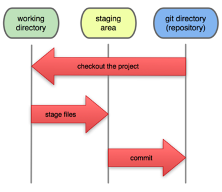

Committed means that the data is safely stored in your local database.
Modified means that you have changed the file but have not committed it to your database yet.
Staged means that you have marked a modified file in its current version to go into your next commit snapshot.